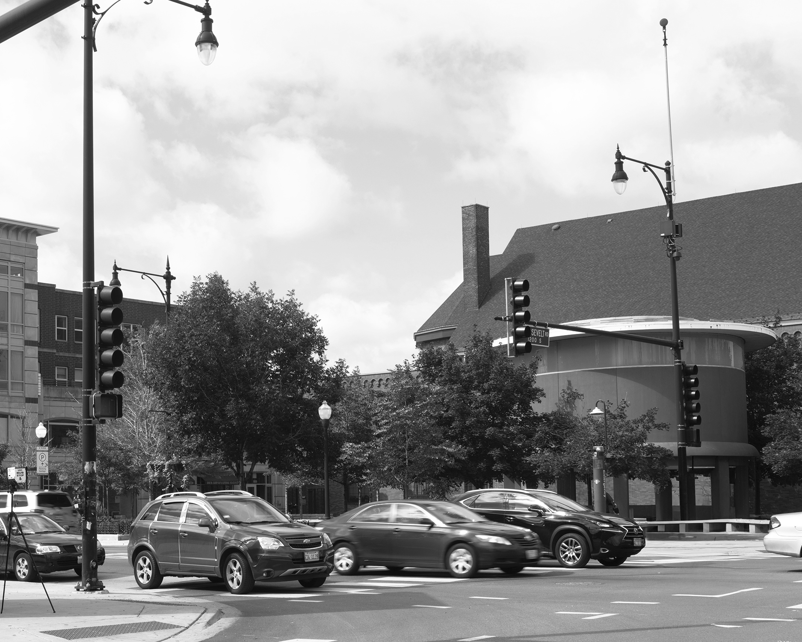

Hard Scrabble Sound
2018
Two franchises of military perceptual technology articulate one another: acoustic experiments developed by James Turrell while in residence at a defense contractor in 1968 are played back to the ShotSpotter acoustic surveillance sensor that oversees his Chicago "Skyspace,"" Hard Scrabble Sky. Both the ShotSpotter and the Skyspace interact as multiples, each a component in a network of architectures that derive meaning and purpose through one's knowledge of their iteration, one vision of a public, or a future, premised on the hearing of another.
